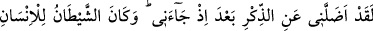

hükümlerindendir.
Mesnevî’de der ki:
Dişin çürüdü mü, söküp at onu
O artık diş değildir, ey üstad
(Söküp at ki) vücûdun geri kalanına zarar vermesin.
O senindi, ama artık ondan kurtulmalısın
İnsânu’l-uyûn’da “Rasûlullah (s.a.) Übeyy b. Halef dışında ne daha önce ne de sonra
bizzat kendi elleriyle hiç kimseyi öldürmemiştir” der.
“Keşke o peygamberle” Muhammed (s.a.) ile “birlikte” dünyada bu vartalardan
kurtulmak için “bir yol tutsaydım!” Yâni O’na tâbi olsaydım ve O’nunla birlikte İslâm
üzere olsaydım.
28. Yazık bana! Keşke falancayı (bâtıl yolcusunu) dost edinmeseydim!
“Vah bana,” “
” helâk olmak demektir. “
” bir sızlanma ve üzüntü
ifâdesidir. ‘Ey benim helâkim gel, hazır bulun, işte şimdi senin gelme vaktindir’
demektir. Aslında gelmesi beklenen akıllı kimselere nidâ edilip çağrılır. Ancak Araplar
üzüntülerini göstermek için akletmeyen varlıklara da nidâ ederler.
“Ne olurdu, ben falanı dost tutmasaydım” “
”, sevgi anlamındaki “
”
kökünden olup arkadaş mânâsına gelir. Burada kasdedilen cin ve insan şeytanlarından
kim olursa olsun kişiyi dünyada yoldan çıkaran kimsedir. Bu ifâdenin kapsamına
sözkonusu Übeyy de dâhildir.
el-Kâmûs’ta der ki: “Fulân ve fulâne kelimeleri isimlerden kinâyedir. Fülân kelimesi
akıllı erkekler için kullanılan özel isimlerden kinâyedir. Fülâne kelimesi de kadınlar
için kullanılan özel isimlerden kinâyedir.”
29. Çünkü zikir (Kur’an) bana gelmişken o, hakîkaten beni ondan saptırdı.
Şeytan insanı (uçuruma sürükleyip sonra) yüzüstü bırakıp rezil rüsvay eder.
“Çünkü” Allah’a yemin olsun ki “zikir” rağbet edilen ve korkulan herşeyi hatırlatan
Kur’ân “bana gelmişken” Kur’ân’la amel ettikten ve Kur’ân’ın öğütlerine bir müddet
riâyet ettikten sonra “o, hakîkaten beni ondan saptırdı.” O azgınlık Kur’an’dan ve
zikirden alıkoydu.